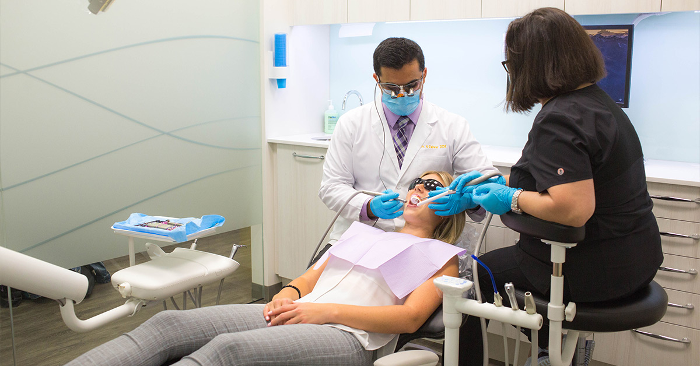
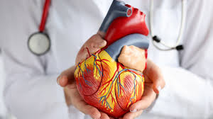

Center of Excellence
Mother and Baby
At our Mother and Baby center, we provide specialized care to ensure both mother and baby receive the best healthcare services. Our experienced team of doctors and nurses offers prenatal, postnatal, and pediatric care, ensuring a smooth transition into motherhood. We offer comprehensive consultations, advice, and support on childbirth, infant care, breastfeeding, and early childhood development. Whether you are expecting or recently welcomed a newborn, our center is dedicated to making your experience as safe and joyful as possible.

Dental Unit
Our Dental Unit is equipped with the latest technology to provide comprehensive dental care for all ages. From routine check-ups and cleanings to advanced treatments such as fillings, crowns, and root canals, our experienced dental professionals are committed to maintaining your oral health. We offer both preventive and restorative services, ensuring that your smile stays bright and healthy. With a focus on patient comfort and care, we aim to make every dental visit a positive experience.
Skincare & Cosmetic Center
Our Skincare & Cosmetic Center offers a variety of treatments designed to rejuvenate and enhance your skin. We provide services such as facials, anti-aging treatments, acne solutions, and customized skincare plans to address your unique skin needs. Whether you are looking to improve skin texture, reduce fine lines, or simply refresh your appearance, our team of experts will guide you toward the best treatment options. We use high-quality products and advanced techniques to deliver exceptional results.

Heart Center
Our Heart Center is dedicated to providing world-class cardiac care. We offer a full range of services for the prevention, diagnosis, and treatment of heart-related conditions. From routine screenings to advanced procedures such as angioplasty and heart surgery, our team of cardiologists and specialists work together to provide the best care possible. Our goal is to ensure that every patient receives personalized treatment to manage and improve their heart health, helping you live a longer, healthier life.
